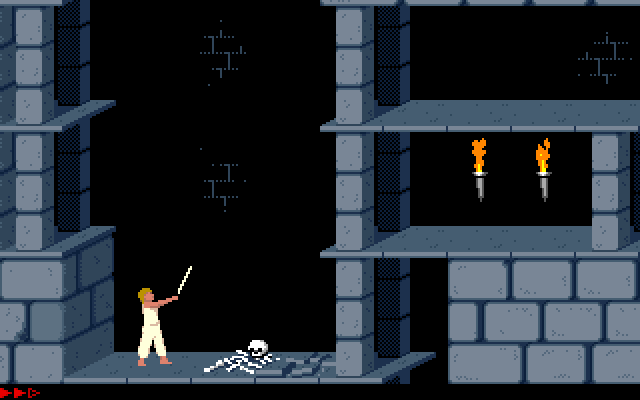

I build hardware.
Then I ask what breaks.
I’m Jegadiswar. This started with Prince of Persia and the thought, “I could build that.” These days it’s silicon instead of swords. The bugs still think they’re the final boss.
It began with a game.
It led me to silicon.
At eight, I played Prince of Persia (1989) and wanted to make a game of my own. At ten, I got interested in robotics and science. The subjects changed, but I kept wanting to know how things worked.
At fifteen, I taught myself React Native and sold billing apps to local stores. The next year, I started a custom clothing brand. Customers would describe a design to my team, watch us make it, and get their shirt a week later. I liked seeing an idea become something people could actually use.
In robotics, I cared less about how a machine moved and more about its brain and heartbeat, the circuits that help it sense, compute, and respond. That curiosity led me to VLSI.
Follow the story, age by age →
THE THROUGH-LINE
A closer look at the journey ↗New interests.
Same curiosity.
I still like figuring out how something works, then trying to make it myself.